Cada vuelta que da la energía
es plata que no sale
Energía. Cuánta entra, cuánta se queda adentro y cuántas veces la hacemos trabajar antes de dejarla ir.
Suelo vivo, qué sembrar
y agua que se queda. Ahora
cuánto rinde todo eso.
Los cinco anteriores construyen la fábrica. Este mide si la fábrica trabaja para ti o para el proveedor de insumos.

El bosque no compra nada
y produce más que tu finca.
Recibe la misma luz, la misma lluvia y el mismo suelo. La diferencia no está en lo que entra: está en cuántas veces usa cada cosa antes de soltarla.

De dónde viene la energía
y por dónde se va
Fotosíntesis, respiración y la cuenta que casi nadie hace: cuánta biomasa se saca y cuánta se deja.
El flujo de energía en una finca
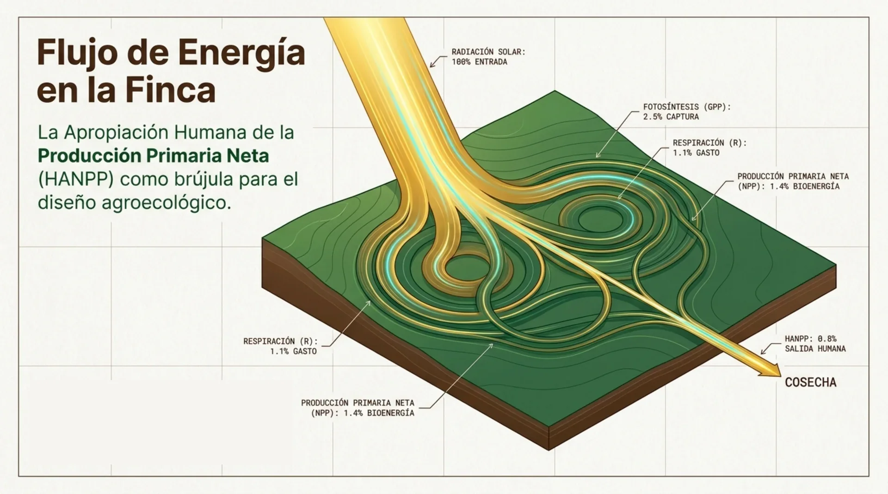
De cada rayo de sol,
esto es lo que llega al plato
Nadie va a subir el 2,5 % inicial: eso lo fija la física. Lo que sí se puede es no desperdiciar lo que ya se capturó.
La energía entra por
una sola puerta
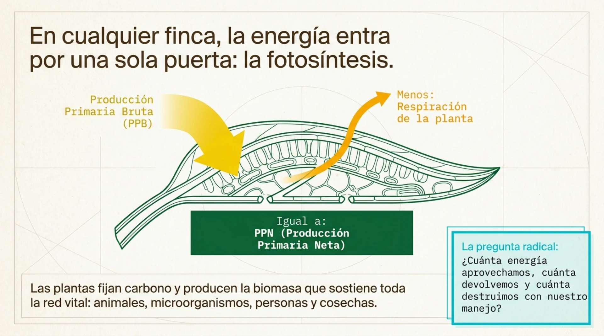
¿Cuánta aprovechamos,
cuánta devolvemos
y cuánta destruimos?
Toda decisión de manejo —quemar el rastrojo, vender la gallinaza, dejar el lote desnudo, sacar la guadaña— es una respuesta a esas tres preguntas, aunque no la hayamos pensado así.
HANPP: cuánta energía
le quitamos al ecosistema
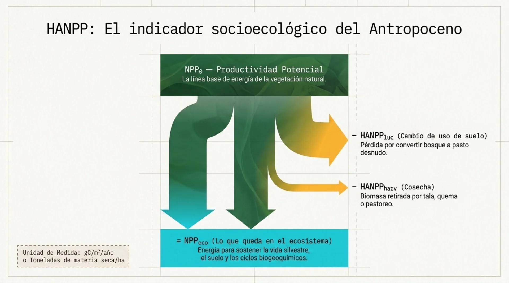
Más biomasa por hectárea
y menos energía para la biósfera
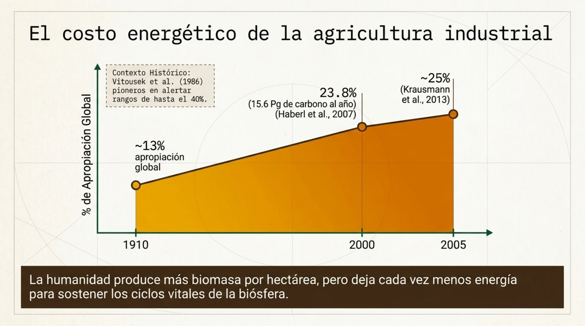
Finca extractiva
o finca que recircula
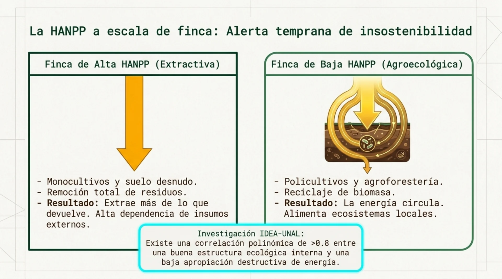
Vender el cien por ciento de lo que produces no es eficiencia: es descapitalización con factura diferida.

Cinco estrategias
para hacerla dar vueltas
De la teoría al diseño. Cada estrategia es una decisión que ya pueden tomar el lunes.
La Estructura Agroecológica Principal
es la brújula espacial
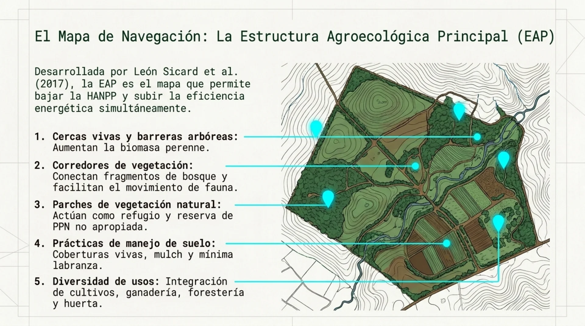
Multiplicar la captura
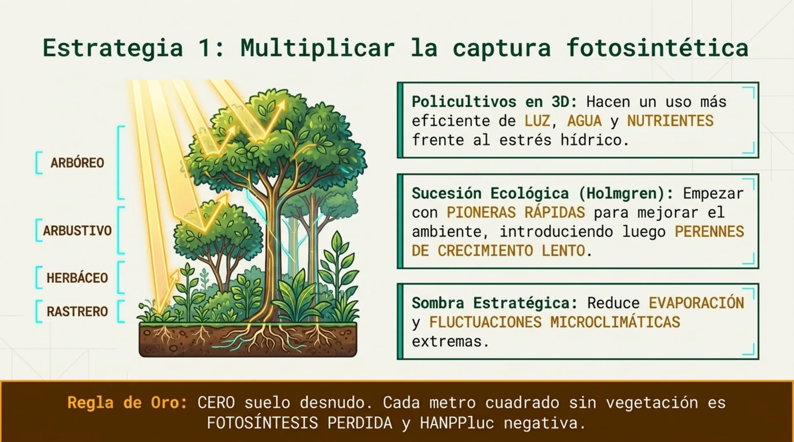
Cerrar los ciclos
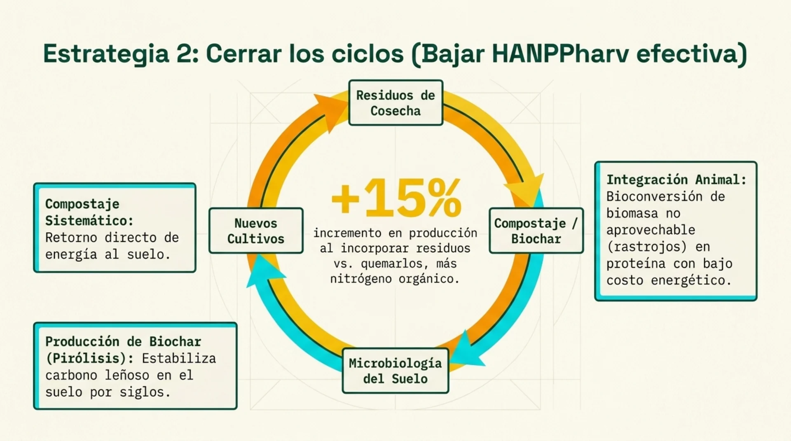
Cómo da vueltas la energía
en esta finca
Cuatro vueltas antes de que esa energía salga de la finca. Cada vuelta es un insumo que no se compró.
Medir el retorno, no solo la salida
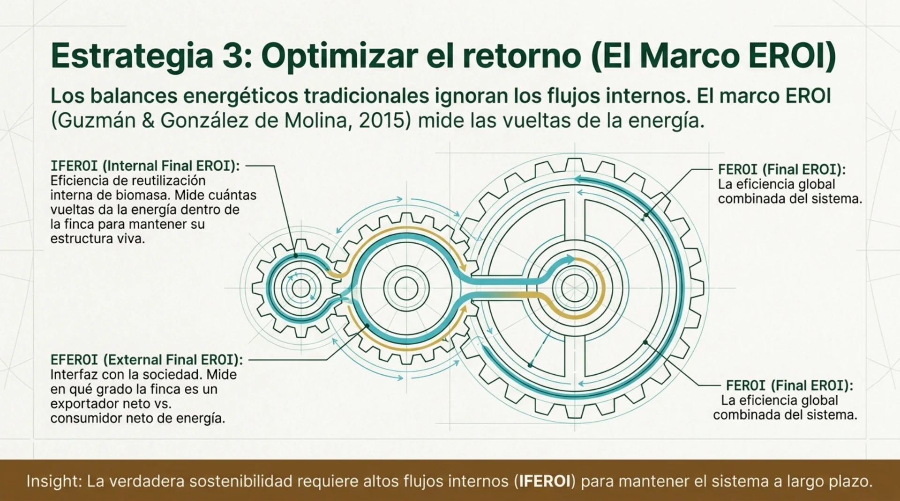
Cambiar energía fósil
por infraestructura viva
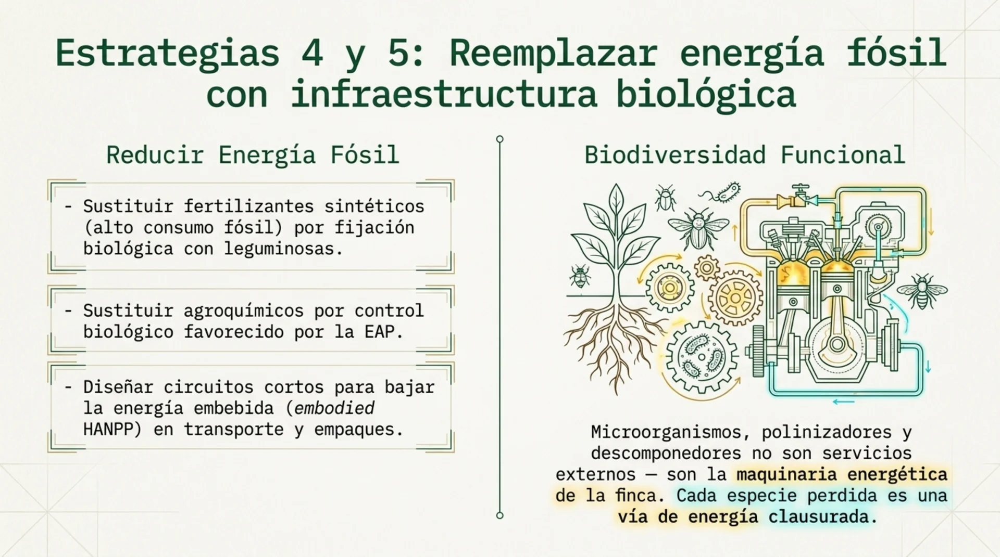
Qué mueve cada decisión de diseño
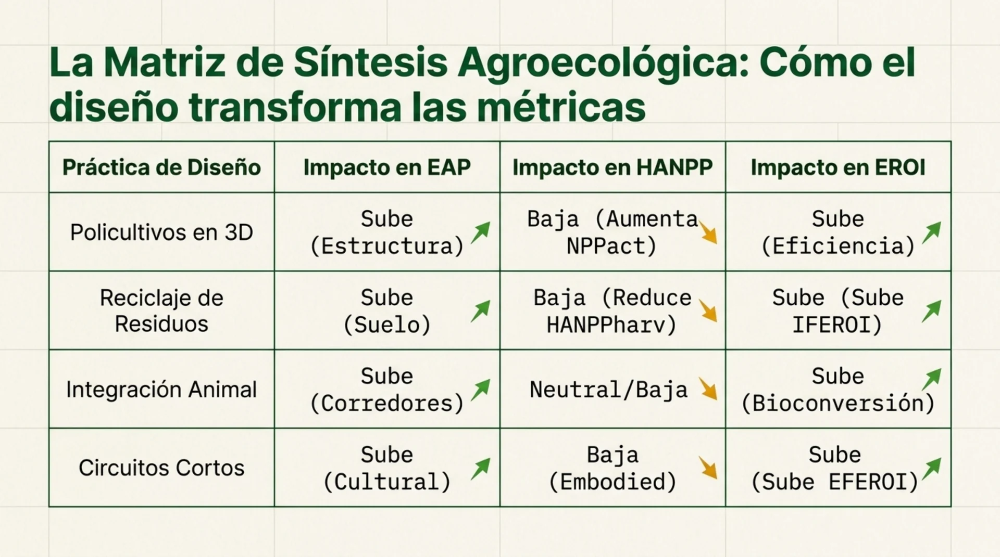
El animal es el que
cierra el ciclo
Integración pecuaria: cuántos animales aguanta tu área y en qué condiciones. El pastoreo racional lo trabajamos mañana en el potrero.
Hay biomasa que nadie
se va a comer
- Rastrojo, hoja de plátano, guadaña, tusa, cáscara, pasto que se pasó de punto: energía capturada que no entra al mercado.
- Sin animal, esa biomasa solo puede compostarse, y el compost tarda. Con animal, se vuelve proteína esta semana y abono la siguiente.
- El animal es la única máquina que convierte biomasa de bajo valor en producto de alto valor sin gastar combustible.
Por eso una finca sin animales tiene que comprar casi toda su fertilidad.
Cuánto come tu hato,
en materia fresca
del peso vivo al día. Esa es la regla. Lo demás es multiplicar.
Acá: 38 animales activos, 1.600 kg de hato en total, 160 kg de comida diaria. Para saber si tu potrero aguanta, cortas un metro cuadrado antes de que entre el ganado, lo pesas en fresco y comparas.
El módulo ovino
de La Huerta
Mañana vamos al potrero a medir el rebrote y a entender por qué los tiempos de descanso no se fijan por calendario.
Tres plantas que reemplazan
el concentrado
Tithonia diversifolia. Se siembra por esqueje y produce una barbaridad de biomasa. Es el que de verdad reemplaza concentrado en corderos.
Xanthosoma sagittifolium. Bulbos sembrados en línea, hoja grande, corte cada 15 días para máxima biomasa. Similar al maíz en proteína.
King Grass y similares. Acá se riega con el agua residual tratada, que es la vuelta de energía de la que hablamos esta mañana.
Se siembran cerca del corral, para no gastar en acarreo la energía que se acaba de ganar.
Dosis de microorganismos
por especie
| Animal | Dosis diaria | Tope | Lo que se ve |
|---|---|---|---|
| Gallinas ponedoras | 20 g por ave | de ~120 g de consumo | Hasta 15 % menos gasto en concentrado |
| Corderos | 50 g por animal | 20 % máximo | Complementa botón de oro y pasto de corte |
| Cerdos | 10 a 12 % de la ración | 20 % máximo | Con salvado y melaza extra |
| Todos | Nunca MM líquidos en el agua de bebida: el pH por debajo de 4 les afecta. El sólido, mezclado con la ración, funciona como probiótico. | ||
Memorias del curso de julio 2026 · sección 3.10
El estiércol sale activado
- Se descompone mucho más rápido en el potrero y en la compostera.
- Sale del corral ya mezclado con el cisco de la cama: entra directo al bocashi sin tener que buscarle carbono aparte.
- Es el 55 % de la receta del bocashi. Sin animal, ese 55 % se compra.
Ahí está la vuelta completa: el pasto se vuelve cordero, el cordero vuelve bocashi, el bocashi vuelve hortaliza.

Lo que esto da
cuando se suma
Los números de esta finca, que es menos de dos hectáreas productivas.
Lo que sostiene
una finca que recircula
Y carbono neutro en alcances 1 y 2 por el aumento de materia orgánica del suelo, sin comprar un solo bono.
No se compró una máquina para lograrlo. Se dejó de sacar lo que servía adentro.
Cuatro pasos para saber
cuánta energía te estás llevando
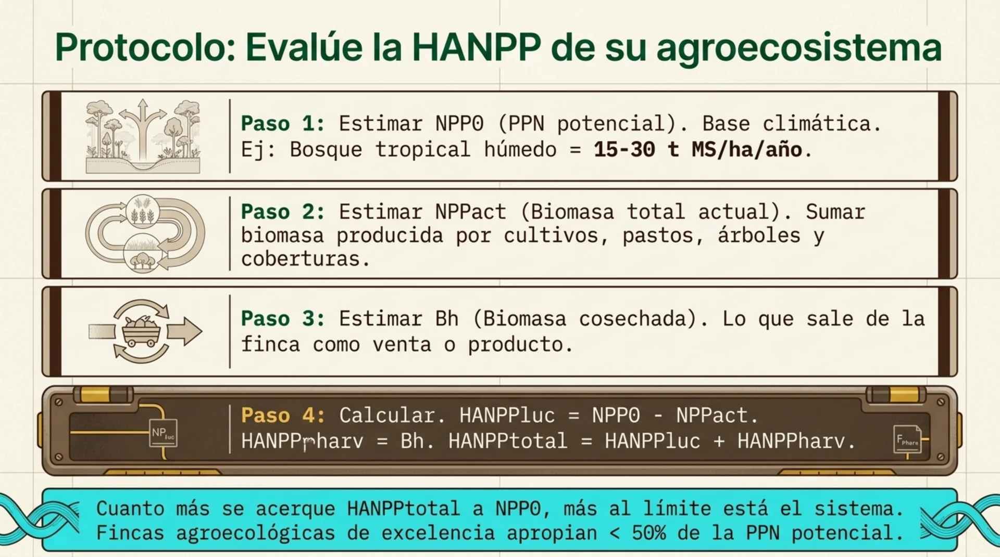
Cinco ideas fuerza
para el diseño
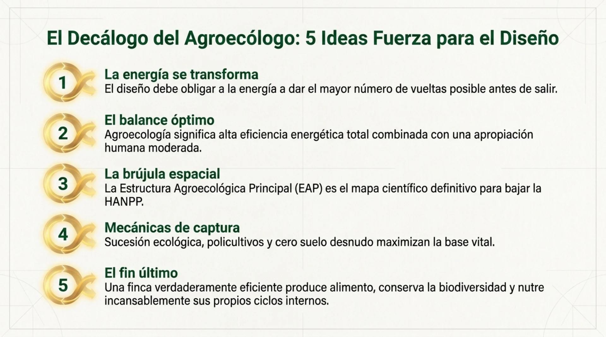
Cuatro cosas que ya
puedes dejar de comprar
- Listas todo lo orgánico que sale de tu finca sin venderse: rastrojo quemado, guadaña botada, estiércol regalado.
- Eliges uno de esos flujos y lo devuelves al sistema esta semana.
- Siembras 100 m² de banco de proteína cerca del corral.
- Haces el aforo de un potrero y lo comparas con el 10 % del peso de tu hato.
Respaldo científico
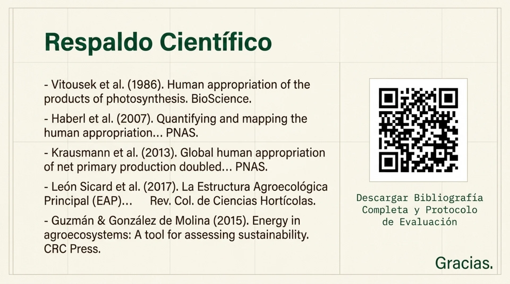
La energía ya da vueltas.
Falta saber cuándo parar.
Mañana, Principio 7 · Descanso. Recuperación de lotes, el descanso como fertilidad y la aplicación directa en el potrero: pastoreo racional, medición de rebrote, tiempos y cargas.